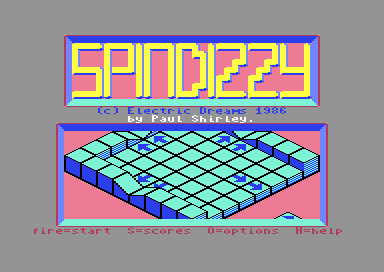
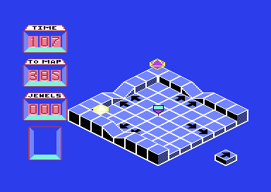

<meta charset="utf-8">
<meta name="viewport" content="width=device-width, initial-scale=1">
<title>Spindizzy</title>
<link rel="preconnect" href="https://fonts.googleapis.com">
<link rel="stylesheet" href="https://fonts.googleapis.com/css2?family=Lato:wght@400;700;900&family=IBM+Plex+Mono:wght@400;500&display=swap">
<style>
:root{
  --bg:#23262d; --paper:#e9e7e1; --surface:#ffffff; --surface-2:#f1efea; --line:#d5d3cc; --line-soft:#e0ded8;
  --ink:#2f3136; --ink-soft:#55585f; --ink-mute:#80838a;
  --link:#1f5fa8; --link-hover:#154480; --accent:#1f5fa8;
  --amber:#c25a00; --cyan:#1f5fa8; --coral:#d04a3a; --green:#2a8a4a; --violet:#4a5bd6; --hl:#fff0c2;
  --chip:#2f3136; --chip-ink:#ffffff;
  --c64blue:#40318d; --c64grey:#686868;
  --fd:'Lato',system-ui,sans-serif; --fb:'Lato',system-ui,sans-serif; --fm:'IBM Plex Mono',ui-monospace,Menlo,monospace;
  --col:1080px; --gx:68px; --fs:17px; --lh:1.6; --hw:900; --h1:46px; --h2:26px; --sy:48px; --pp:26px; --r:10px;
  --plate-shadow:0 1px 2px rgba(0,0,0,.05),0 4px 14px rgba(0,0,0,.05);
}
*{box-sizing:border-box}
html{background:var(--bg);min-height:100%}
body{background:var(--paper);color:var(--ink);font-family:var(--fb);font-size:var(--fs);line-height:var(--lh);max-width:var(--col);margin:0 auto;min-height:100vh;padding:0 0 4rem}
h1,h2,h3{font-weight:var(--hw);letter-spacing:-.01em;text-wrap:balance;color:var(--ink);margin:0}
.wrap{padding:0 var(--gx)}
.hero{padding:48px var(--gx) 8px;text-align:left}
.eyebrow{font-family:var(--fm);font-size:12px;letter-spacing:.08em;text-transform:uppercase;color:var(--ink-mute);margin:0 0 10px}
.hero h1{font-size:var(--h1);line-height:1.15;letter-spacing:-.02em;margin:0 0 14px}
.hero .sub{margin:0 0 .6em;color:var(--ink-soft)}
section{padding:var(--sy) 0 24px}
section:last-of-type{border-bottom:none}
.fig{font-family:var(--fm);font-size:12px;letter-spacing:.08em;text-transform:uppercase;color:var(--ink-mute);margin:0 0 10px}
h2.t{font-size:var(--h2);margin-bottom:12px}
.lede{color:var(--ink-soft);margin:0 0 30px}
.plate{background:var(--surface);border:1px solid var(--line);border-radius:var(--r);padding:var(--pp);box-shadow:var(--plate-shadow)}
.cap{font-size:14px;color:var(--ink-mute);margin-top:14px;line-height:1.55}
.cap b{color:var(--ink);font-weight:700}
code{font-family:var(--fm);font-size:.82em;background:var(--chip);color:var(--chip-ink);border-radius:4px;padding:2px 6px;overflow-wrap:break-word;-webkit-box-decoration-break:clone;box-decoration-break:clone}

.sp-shots{display:grid;grid-template-columns:repeat(auto-fit,minmax(240px,1fr));gap:12px}
.sp-shots figure{margin:0}
.sp-shots img{display:block;width:100%;height:auto;image-rendering:pixelated;border-radius:4px;background:#000}
.sp-shots figcaption{font-size:13px;color:var(--ink-mute);margin-top:6px}
.sp-cv{display:block;width:100%;max-width:640px;height:auto;image-rendering:pixelated;background:#000;border-radius:4px}
.sp-bar{display:flex;gap:8px;flex-wrap:wrap;align-items:center;margin:0 0 14px}
.sp-bar button{font-family:var(--fm);font-size:13px;background:var(--surface-2);border:1px solid var(--line);border-radius:6px;padding:6px 11px;cursor:pointer;color:var(--ink)}
.sp-bar button[aria-pressed="true"]{background:var(--chip);color:var(--chip-ink);border-color:var(--chip)}
.sp-tab{border-collapse:collapse;width:100%;font-size:14px;margin-top:14px}
.sp-tab th,.sp-tab td{border-bottom:1px solid var(--line-soft);padding:6px 8px;text-align:left;vertical-align:top}
.sp-tab th{font-family:var(--fm);font-size:12px;letter-spacing:.06em;text-transform:uppercase;color:var(--ink-mute);font-weight:500}
.sp-tab td.n{font-family:var(--fm);text-align:right}
.sp-tab th.n{text-align:right}
.sp-wrapx{overflow-x:auto}
.sp-bytes{font-family:var(--fm);font-size:13px;line-height:1.9;word-break:break-word}
.sp-bytes span{display:inline-block;padding:0 3px;border-radius:3px;margin:0 2px 3px 0}
.sp-k0{background:#e4e1f7}.sp-k1{background:#fde7c8}.sp-k2{background:#d7efd9}.sp-k3{background:#f6d6d2}.sp-k4{background:#d6e6f5}
.sp-note{font-size:14px;color:var(--ink-mute)}
.sp-map{display:block;max-width:100%;height:auto;cursor:pointer;background:#1b1c20;border-radius:4px}
.sp-legend{display:flex;gap:16px;flex-wrap:wrap;font-size:13px;color:var(--ink-soft);margin-top:10px}
.sp-legend i{display:inline-block;width:12px;height:12px;border-radius:2px;margin-right:6px;vertical-align:-1px}
.sp-split{display:flex;gap:22px;flex-wrap:wrap;align-items:flex-start}
.sp-split > div{flex:1;min-width:280px}
.sp-plot{display:block;width:100%;max-width:640px;height:auto;background:#fbfaf7;border:1px solid var(--line-soft);border-radius:4px}
.sp-in{font-family:var(--fm);font-size:15px;padding:6px 10px;border:1px solid var(--line);border-radius:6px;width:12em}
.sp-out{font-family:var(--fm);font-size:14px;margin-left:10px}
</style>
<!-- tabs -->
<header class="hero">
  <p class="eyebrow">1986 · Electric Dreams Software</p>
  <h1>Spindizzy</h1>
  <p class="sub">A spinning top maps a world of 386 rooms against the clock. Every room is a short list of blocks and shared shapes, built into a grid of 8 by 8 by 8 cells and drawn in perspective one tile at a time, and the clock counts passes of the game's loop, not seconds.</p>
</header>
<main class="wrap">

<section id="game">
  <p class="fig">01 · The game</p>
  <h2 class="t">A survey of a world of floating rooms</h2>
  <p>You steer GERALD, a surveying craft that looks like a spinning top, through a world of rooms seen from above at an angle. Each room is one screen: floors, ramps, stairs, bridges, water, ice, and trampolines, with lifts and switches that open the way on. Walking off an edge leads into the next room. The job is to visit every room and collect the jewels on the way.</p>
  <p>The panel on the left counts down TIME, counts TO MAP (the rooms not yet visited, 385 at the start), and counts JEWELS. A new room adds 8 to the time and a jewel adds 10. Falling off the world or onto a deadly surface costs 5, and the game ends when the time runs out. M shows the map of the rooms visited, and F1, F3, F5 and F7 turn the view, since a wall can hide the way on.</p>
  <div class="sp-shots">
    <figure><figcaption>The title, with the start room drawn inside the frame.</figcaption></figure>
    <figure><figcaption>The start room: TIME 107, TO MAP 385, JEWELS 000.</figcaption></figure>
  </div>
</section>

<section id="sound">
  <p class="fig">02 · Sound</p>
  <h2 class="t">Sound: every effect on voice 3 buzzes</h2>
  <p class="lede">There is no music in the game. These are its sound effects, made by its own code.</p>
  <div class="plate"><div id="sp-sfx"></div>
  <p class="cap"><b>The game's own code</b>, run on this page on a model of the C64's processor over the listing's bytes and played through the site's model of the sound chip. Each effect starts the way the game starts it, and then the raster interrupt (<code>raster_irq</code>, <code>$7066</code>) runs once a frame, as it does in play. <code>test_sound.js</code> holds the first frames of each against the game's own instructions.</p></div>
  <p>The C64's sound chip has three voices, and the game gives each its own job. Voice 1 plays the jingle for a jewel: a triangle wave (a soft, flute-like tone) whose pitch steps through eight values, one each frame, for 80 frames (<code>jingle_pitches</code>, <code>$721B</code>). Voice 2 beeps when Gerald turns a switch on, at the switch's own pitch from a table of 16 (<code>switch_pitches</code>, <code>$8912</code>), and hisses with noise while an inhabitant touches him.</p>
  <p>Voice 3 makes everything else: a sawtooth (a brighter, buzzier tone) for a trampoline and for a lift passing a level, and a burst of noise for a hard landing or for Gerald bursting (<code>noise_sound</code>, <code>$88BE</code>). Every frame the interrupt flips voice 3's pitch between two values (<code>hum_toggle</code>, <code>$70EE</code>), whatever voice 3 is playing, so each of these sounds buzzes. A landing at a speed of 28 or more thuds (<code>landing_sound</code>, <code>$89A5</code>), and a harder one thuds longer, not louder: the speed sets only how slowly the sound fades, up to a speed of 60, which sounds the same as a burst. A gentler landing makes no sound at all, and walls make none either, which <a href="discoveries.html#walls">Discoveries</a> explains.</p>
</section>

<section id="room">
  <p class="fig">03 · Drawing a room</p>
  <h2 class="t">One room, drawn by the game's own code</h2>
  <p class="lede">The start room as <code>enter_room</code> draws it. Turn the view as the F keys do.</p>
  <div class="plate">
    <div class="sp-bar" id="sp-views"><button type="button" data-v="0" aria-pressed="true">F1 view</button><button type="button" data-v="1" aria-pressed="false">F3 a quarter turn</button><button type="button" data-v="2" aria-pressed="false">F7 a half turn</button><button type="button" data-v="3" aria-pressed="false">F5 three quarters</button></div>
    <canvas id="sp-room" class="sp-cv" width="512" height="400" aria-label="The start room as the game draws it"></canvas>
    <p class="cap" id="sp-room-cap"><b>The game's own routines</b>, run on a model of the C64's processor over the bytes the Source tab lists, make the screen the C64 shows, byte for byte. The block in the bottom right corner is the compass, drawn for the view. Every room is on the <a href="levels.html">Map</a> tab.</p>
  </div>
  <p>A room is a box of 8 by 8 cells, 8 levels high. The game keeps it as a grid of 512 bytes (<code>$B700</code>), one for each cell, holding the type of block there or 0 for empty space. To draw it, <code>build_picture</code> (<code>$9A98</code>) walks the grid and works out where each cell lands on the screen. A step in X moves it one row down and one place right, a step in Y one row down and one place left, and a level up moves it one row up. That gives the diamond-shaped view, with no multiplication anywhere.</p>
  <p>Each block type has a list of eight small tiles that make up its picture (<code>block_tiles</code>, <code>$A900</code>). Rather than draw a block over the one behind it, the game first queues every tile into a buffer of 25 rows of 16 places (<code>$AA80</code>), keeping up to four tiles a place with how near each is. Only then does <code>draw_picture</code> (<code>$9A0D</code>) build each place: each tile's mask (<code>$B900</code>) cuts a hole in what is behind it, and its picture (<code>$BA00</code>) fills the hole. A nearer tile hides a farther one without either being drawn twice.</p>
  <p>Gerald, the jewels, the lifts, and the inhabitants are sprites, which the video chip draws over the picture. A sprite would float in front of a wall that should hide it, so before each one is drawn the game builds a mask from the tiles queued in front of it (<code>build_sprite_mask</code>, <code>$9D18</code>) and cuts its shape with it. That is how Gerald disappears behind a pillar.</p>
  <p>Turning the view rebuilds the grid from the record with every block's position turned and every slope turned to face the new way (<code>decode_block</code>, <code>$95D4</code>; <code>turn_block_type</code>, <code>$95AE</code>), then draws it again. The room itself does not change.</p>
</section>

<section id="records">
  <p class="fig">04 · The world's data</p>
  <h2 class="t">A room is a list of blocks</h2>
  <p class="lede">The bytes of a room's record, coloured by what each one is. Pick a room.</p>
  <div class="plate">
    <div class="pick"><button type="button" class="step" data-d="-1" aria-label="The room before">‹</button><select id="sp-rec-sel" aria-label="Room"></select><button type="button" class="step" data-d="1" aria-label="The room after">›</button></div>
    <div class="sp-bytes" id="sp-rec"></div>
    <div class="sp-legend"><span><i class="sp-k0"></i>length, map row, map column, flags</span><span><i class="sp-k1"></i>the floor's block word</span><span><i class="sp-k2"></i>block words, and the structure each type-2 word names</span><span><i class="sp-k3"></i>end of the blocks, end of the pieces</span><span><i class="sp-k4"></i>moving pieces, three bytes each</span></div>
    <p class="cap" id="sp-rec-cap"></p>
  </div>
  <p>The whole world is 14,593 bytes, one file on the disk, which the game copies down to <code>$0400</code> at start-up. Its 386 room records (<code>room_directory</code>, <code>$0A00</code>) are 9 to 86 bytes long, 33 on average. Each starts with its length, its place on the map, and a byte of flags whose low four bits pick one of 16 colour schemes. Then come block words, two bytes each: the first holds the block's type and how to fill the cells under it, the second its position in the room. The first word is the floor, which <code>fill_floor</code> (<code>$966C</code>) repeats across all 64 cells.</p>
  <p>Most rooms are built from shared shapes. A block word of type 2 is followed by the number of a structure (<code>structure_list</code>, <code>$0400</code>): 127 records of block words of their own, placed with the calling word's position as an offset and turned by two of its bits. A structure may name other structures, as 76 of them do, so a flight of steps can be built once and used in many places. The start room is 13 block words, all of them structures.</p>
  <p>After the blocks come the moving pieces, three bytes each: a type (a jewel, a lift, an inhabitant, or a block that a switch puts in place), a packed position, and a third byte that is the jewel's number, the lift's levels and pause, the inhabitant's top speed, or the switched block's structure. The world holds 220 jewels in 198 rooms, 64 lifts, 14 inhabitants, and 70 switched blocks. 141 rooms have no moving pieces at all.</p>
</section>

<section id="physics">
  <p class="fig">05 · Movement</p>
  <h2 class="t">Gerald slides, and the surface decides how</h2>
  <p>The joystick never moves Gerald directly. While he touches a surface, each direction held adds 1 to his speed along that axis on every pass of the main loop (<code>main_loop</code>, <code>$8DA1</code>), or 2 with fire held, and friction takes a 64th of the speed away again (<code>apply_friction</code>, <code>$898D</code>). In the air he cannot steer, and gravity takes 8 from his upward speed each pass (<code>apply_gravity</code>, <code>$8951</code>). What happens when he comes down depends on the cell under him (<code>surface_response</code>, <code>$8F46</code>):</p>
  <div class="sp-wrapx"><table class="sp-tab">
    <tr><th>Surface</th><th>In the grid</th><th>What it does</th></tr>
    <tr><td>Floor</td><td><code>$01</code></td><td>Stops the fall. Friction slows him and the joystick steers him.</td></tr>
    <tr><td>Deadly</td><td><code>$02</code></td><td>Bursts him (<code>burst_animation</code>, <code>$7360</code>), then puts him back where he last stood, for 5 of the time.</td></tr>
    <tr><td>Trampoline</td><td><code>$03</code></td><td>Reverses the fall, so he bounces back up, with a buzz on voice 3.</td></tr>
    <tr><td>Slopes</td><td><code>$04</code>-<code>$1F</code></td><td>Seven shapes in four directions each: gentle and steep slopes, outer and inner corners, steep corners, ridges, and valleys. Each has its own height across the cell, and turns his speed along it into speed up or down, so he rolls down and slows climbing.</td></tr>
    <tr><td>Ice</td><td><code>$63</code></td><td>Holds him up, but neither friction nor the joystick works on it: he slides on in a straight line. If he ever stops dead on it, he is restarted, since he could never move again (<code>on_ice</code>, <code>$9116</code>).</td></tr>
    <tr><td>Water</td><td><code>$20</code></td><td>Counts as nothing under him (<code>find_floor_at</code>, <code>$9B57</code>), so he falls through it and, 16 levels further down, is put back where he last stood.</td></tr>
    <tr><td>A switch pad</td><td><code>$D0</code>-<code>$DB</code></td><td>A floor that also presses the switch (<code>press_switch</code>, <code>$916A</code>).</td></tr>
  </table></div>
  <p>Landing too hard bursts him as surely as a deadly block: an upward speed below -108 when he lands (<code>check_hard_landing</code>, <code>$89CF</code>). The main loop saves his position on every pass he stands on something solid, and that is where every restart puts him.</p>
</section>

<section id="time">
  <p class="fig">06 · The clock</p>
  <h2 class="t">The clock counts passes of the main loop</h2>
  <p>The time is three decimal digits, kept in BCD (each half of a byte holds one decimal digit, <code>$5E</code>/<code>$5F</code>). A new game sets it to 100, and the start room adds 8 as the first room visited. All losses go through one routine (<code>add_to_time</code>, <code>$9533</code>), always as an addition of a negative number written as a decimal complement (9999 for -1, 9995 for -5). All gains go through another (<code>add_time_capped</code>, <code>$9C8E</code>), which never lets the time pass 150.</p>
  <div class="sp-wrapx"><table class="sp-tab">
    <tr><th>Event</th><th class="n">Time</th><th>Where</th></tr>
    <tr><td>A room visited for the first time</td><td class="n">+8</td><td><code>mark_room_visited</code>, <code>$8BB8</code></td></tr>
    <tr><td>A jewel</td><td class="n">+10</td><td><code>jewel_piece</code>, <code>$A12C</code></td></tr>
    <tr><td>A tick of the clock, every 64 passes, or 256 in the beginners' rooms</td><td class="n">-1</td><td><code>main_loop</code>, <code>$8DA1</code></td></tr>
    <tr><td>A restart after a fall or a burst</td><td class="n">-5</td><td><code>restart_at_safe_point</code>, <code>$89E7</code></td></tr>
    <tr><td>Space, the brake, each pass it is held while he stands</td><td class="n">-1</td><td><code>brake</code>, <code>$8F0A</code></td></tr>
    <tr><td>An inhabitant touching him, every other pass</td><td class="n">-2</td><td><code>inhabitant_piece</code>, <code>$A622</code></td></tr>
  </table></div>
  <p>The clock is not timed by the video chip's 50 frames a second. It ticks once for every 64 passes of the main loop. Each pass begins by waiting for a timer on the second CIA chip (one of the C64's two timer and input chips) that the game restarts every pass: 16,000 processor cycles at the slow speed, 1 cycle at the fast. At the slow speed the loop makes about 1.22 passes a frame, so the clock ticks about once a second. The fast speed only lets the loop run as fast as its work allows, and the clock speeds up with it: <a href="discoveries.html#fast">Discoveries</a> has the measurements.</p>
  <p>The start room and seven rooms east of it have bit 4 of their flags set, which makes the counter step 1 a pass instead of 4 (<code>room_header</code>, <code>$8B57</code>): the clock there runs at a quarter of its speed, the beginners' area the manual mentions. When every room is visited and all 220 jewels are taken, the game shows the score and offers to carry on exploring with the time set to 150 (<code>survey_complete</code>, <code>$85DB</code>).</p>
  <p>The score screen gives three percentages (<code>score_screen</code>, <code>$83B0</code>): the rooms visited out of 386, the jewels out of 220, and the game, the average of the two.</p>
</section>

<section id="pieces">
  <p class="fig">07 · Switches, lifts and inhabitants</p>
  <h2 class="t">Two switches can be on at once</h2>
  <p>Switch pads carry a number from 0 to 11 in the world data, and the game remembers two switches as on (<code>$36</code>/<code>$37</code>; <code>press_switch</code>, <code>$916A</code>). Pad 0 turns both off. Pads 1 to 7 turn every other switch off and leave only themselves on. Pads 8 to 11 take one of the two places in turn, so one of them can be on together with another. The box at the bottom of the panel shows the symbols of the two that are on (<code>draw_switch_box</code>, <code>$91FA</code>).</p>
  <p>Each of the 64 lifts names a switch, or none for the 20 that always move. A lift that is on moves between two levels, may pause at each end, and carries Gerald while he is in its cell (<code>lift_piece</code>, <code>$A37F</code>). A switched block is a structure placed into the room while its switch is on, and the room is rebuilt whenever the switch changes (<code>switched_block_piece</code>, <code>$A0FF</code>).</p>
  <p>The 14 inhabitants each have a kind and a top speed in their record. Kind 0 keeps to the floor of its level and kind 1 crosses gaps. Each one steers towards Gerald, changing its speed along each axis by 4 at a time (<code>steer_speed</code>, <code>$A818</code>), and while it shares his cell and level it takes 2 from the time every other pass, which is as often as the pieces in such a room move. They are drawn with the two shapes Gerald is not using, so pressing I changes their shape along with his. Their top speed holds in only two of the four directions, which <a href="discoveries.html#inhabitants">Discoveries</a> explains.</p>
</section>

</main>
<footer style="margin:16px 0 0;padding:22px var(--gx) 0;border-top:1px solid #e0ded8;font-family:'IBM Plex Mono',ui-monospace,Menlo,monospace;font-size:12px;color:#80838a"><a href="https://github.com/gamesexplained/gamesexplained" style="color:#1f5fa8;text-decoration:none">GitHub</a> · <a href="https://discord.gg/3V9GWyRDWV" style="color:#1f5fa8;text-decoration:none">Discord</a><br>© Games Explained contributors. Write-ups, facts and symbol maps are available under <a href="https://creativecommons.org/licenses/by-sa/4.0/" style="color:#1f5fa8;text-decoration:none">CC BY-SA 4.0</a>; code under <a href="https://opensource.org/licenses/MIT" style="color:#1f5fa8;text-decoration:none">MIT</a></footer>
<script src="../../lib/c64.js"></script>
<script src="../../lib/cpu6502.js"></script>
<script src="../../lib/sid.js"></script>
<script>
/* sp-sound */
// createDriver(data, C64Cpu): Spindizzy's sound effects, made by the game's own code on the kit's 6502
// over a copy of the listing's memory (data.mem). init(t) starts effect t the way the game does:
// the jingle and the trampoline by setting $79 or $80 for raster_irq; a landing or a burst by calling
// noise_sound ($88BE) with its pitch in A; a switch, an inhabitant's touch and a lift's tick by
// running the instructions of press_switch ($91D0-$91F3), inhabitant_piece ($A7CD-$A7E7) and
// lift_piece ($A3DB-$A3F6) that write the chip. Those writes are the first frame; from the second
// on, play() is raster_irq ($7066), run once a frame as the KERNAL's interrupt runs it, which plays
// the jingle and moves voice 3's pitch every frame. In the game the main loop's writes come part way
// through a frame and the interrupt's at line 256, so a pitch noise_sound or lift_piece sets lasts up
// to a frame; here it lasts one. The SID's writes are kept as io.write receives them.
function createDriver(data, C64Cpu) {
  const sid = new Uint8Array(25);
  let mem = null, cpu = null, frame = 0, length = 0, pending = [];
  const d = { sid, writes: [] };
  const io = {
    read() { return 0; },
    write(a, v) {
      if (a >= 0xD400 && a <= 0xD418) { sid[a - 0xD400] = v; pending.push(a - 0xD400, v); }
    },
  };
  function machine() {
    mem = data.mem.slice();
    cpu = new C64Cpu.CPU(mem, { port: 0x35, io });
    cpu.sp = 0xFF;
  }
  const between = (from, to, regs) => { Object.assign(cpu, regs || {}); cpu.pc = from; cpu.run({ until: to, maxSteps: 1000 }); };
  d.init = (t) => {
    const e = data.effects[t];
    machine(); pending = [24, 0x0F]; sid[24] = 0x0F;      // start_game_image: volume 15
    if (e.kind === 'jewel') mem[0x79] = 0xFF;
    else if (e.kind === 'trampoline') mem[0x80] = 0xFF;
    else if (e.kind === 'noise') cpu.call(0x88BE, { a: e.a });
    else if (e.kind === 'switch') { mem[0x42] = 0xD0 | e.n; between(0x91D0, 0x91F4); }
    else if (e.kind === 'inhabitant') between(0xA7CD, 0xA7E8);
    else if (e.kind === 'lift') { mem[0xC205] = 0; mem[0xC206] = e.level; between(0xA3DB, 0xA3F7, { x: 0 }); }
    frame = 0; length = e.frames;
  };
  d.stop = () => { length = 0; };
  d.playing = () => frame < length;
  d.play = () => {
    if (frame >= length) { d.writes = []; return; }
    if (frame > 0) { mem[0x78] = 0; cpu.irq(0x7066, { kernal: true, maxSteps: 10000 }); }
    d.writes = pending; pending = [];
    frame++;
  };
  return d;
}
// end of sp-sound
</script>
<script>
/* sp-room */
// spRoom(ram, row, col, view, C64Cpu): the room at map row `row`, column `col`, seen from view turn
// `view` (0-3, as F1, F3, F7 and F5 set $28), drawn by the game's own code on the kit's 6502 over a
// copy of the listing's memory. Runs the start of new_game ($84D1-$84F8), which colours the screen
// and colour RAM, and sets what start_game_image and new_game leave for the room code: the colour
// mask $61 = $0F and the bitmap address $6F/$70 = $E040. Runs enter_room ($8B00), which
// finds the record, builds the room grid and the piece table and draws the picture, colours and
// switch box; then one pass of the pieces as the main loop runs them (run_pieces, $9D09, and
// sort_sprites, $9D03) and apply_sprites ($9D06), as raster_irq runs it, for the video chip's
// sprite registers. Gerald's own two sprites are left off. The chips are answered here: colour RAM,
// the video chip's registers, the SID (ignored) and CIA 2's timer (its count reads 0). Returns
// { mem, colour, vic, pieces }: the memory as the video chip would read it, the 1,024 colour
// nibbles, the 47 video registers, and the piece table's records.
function spRoom(ram, row, col, view, C64Cpu) {
  const mem = ram.slice(), colour = new Uint8Array(1024), vic = new Uint8Array(64);
  const io = {
    read(a) {
      if (a >= 0xD800 && a < 0xDC00) return colour[a - 0xD800] | 0xF0;
      if (a >= 0xD000 && a < 0xD400) return vic[a & 63];
      if (a >= 0xD400 && a < 0xD800) return 0;
      if (a >= 0xDD00 && a < 0xDE00) return 0;
      throw new Error('read $' + a.toString(16));
    },
    write(a, v) {
      if (a >= 0xD800 && a < 0xDC00) { colour[a - 0xD800] = v & 15; return; }
      if (a >= 0xD000 && a < 0xD400) { vic[a & 63] = v; return; }
      if (a >= 0xD400 && a < 0xD800) return;
      if (a >= 0xDD00 && a < 0xDE00) return;
      throw new Error('write $' + a.toString(16));
    },
  };
  const cpu = new C64Cpu.CPU(mem, { port: 0x35, io });
  cpu.call(0x84D1, {}, { maxSteps: 1e5, hooks: { 0x84F9: () => true } });
  mem[0x61] = 0x0F; mem[0x6F] = 0x40; mem[0x70] = 0xE0;
  mem[0x44] = row; mem[0x45] = col; mem[0x28] = view & 3;
  cpu.call(0x8B00, {}, { maxSteps: 3e6 });
  cpu.call(0x9D09, {}, { maxSteps: 1e6 });
  cpu.call(0x9D03, {}, { maxSteps: 1e6 });
  cpu.call(0x9D06, {}, { maxSteps: 1e6 });
  vic[0x11] = 0x3B; vic[0x16] = 0xD8; vic[0x18] = 0x18;
  return { mem, colour, vic };
}
// end of sp-room
</script>
<script>
/* sp-world */
// spWorld(ram): the room directory at $0A00 and the structure list at $0400, read as find_room,
// build_room_grid, build_pieces and find_structure read them. A room record: its length, the map row
// (bit 7: visited), the map column (bit 7: a jewel left in a visited room), the flags (low nibble the
// colour scheme, bit 4 the slow clock), the floor's block word, block words to $0000 (a word of type 2
// is followed by a structure number), then moving pieces of three bytes to a 0. A structure: its
// number, its length, block words to $0000.
function spWorld(ram) {
  const words = (p, out) => {
    while (ram[p] || ram[p + 1]) {
      const w = [ram[p], ram[p + 1], null]; p += 2;
      if ((w[0] & 0x1F) === 2) w[2] = ram[p++];
      out.push(w);
    }
    return p + 2;
  };
  const rooms = [];
  for (let a = 0x0A00; ram[a]; a += ram[a]) {
    const r = { addr: a, length: ram[a], row: ram[a + 1] & 0x7F, col: ram[a + 2] & 0x7F, flags: ram[a + 3],
      floor: [ram[a + 4], ram[a + 5]], blocks: [], pieces: [] };
    let p = words(a + 6, r.blocks);
    r.blocksEnd = p;
    for (; ram[p]; p += 3) {
      const t = ram[p], third = ram[p + 2], n = (t >> 3) & 15;
      const kind = (t & 0x7F) === 1 ? 'jewel' : (t & 7) === 2 ? 'lift' : (t & 7) === 3 ? 'inhabitant' : 'block';
      r.pieces.push({ kind, t, pos: ram[p + 1], third, n, x: (ram[p + 1] >> 2) & 7, y: ram[p + 1] >> 5, level: ((ram[p + 1] & 3) << 1) | (t >> 7) });
    }
    rooms.push(r);
  }
  const structures = [];
  for (let a = 0x0400; ram[a + 1]; a += ram[a + 1]) {
    const s = { addr: a, num: ram[a], length: ram[a + 1], blocks: [] };
    words(a + 2, s.blocks);
    structures.push(s);
  }
  return { rooms, structures };
}
// end of sp-world
</script>
<script>
/* sp-draw */
// spDraw(canvas, r, C64): the room picture of spRoom's result, columns 8-39 and rows 0-24 of the
// screen, drawn twice the size by the site's model of the video chip, sprites included.
function spDraw(canvas, r, C64) {
  const out = C64.renderFrame({ vic: Array.from(r.vic.subarray(0, 47)), cia2: [0xC0, 0x3F], writes: [], mem: r.mem, colourMem: r.colour });
  const ctx = canvas.getContext('2d'), img = ctx.createImageData(512, 400);
  const rgb = C64.PAL.map((h) => [1, 3, 5].map((i) => parseInt(h.substr(i, 2), 16)));
  for (let y = 0; y < 400; y++) for (let x = 0; x < 512; x++) {
    const c = rgb[out.px[(35 + (y >> 1)) * out.w + 96 + (x >> 1)]], o = (y * 512 + x) * 4;
    img.data[o] = c[0]; img.data[o + 1] = c[1]; img.data[o + 2] = c[2]; img.data[o + 3] = 255;
  }
  ctx.putImageData(img, 0, 0);
}
// end of sp-draw
</script>
<script>
const SP_EFFECTS = [
  { name: 'A jewel taken: the jingle', kind: 'jewel', frames: 90 },
  { name: 'Switch 0 pressed', kind: 'switch', n: 0, frames: 60 },
  { name: 'Switch 5 pressed', kind: 'switch', n: 5, frames: 60 },
  { name: 'Switch 11 pressed', kind: 'switch', n: 11, frames: 60 },
  { name: 'An inhabitant touching Gerald', kind: 'inhabitant', frames: 50 },
  { name: 'A trampoline', kind: 'trampoline', frames: 60 },
  { name: 'A lift passing level 3', kind: 'lift', level: 3, frames: 30 },
  { name: 'Landing at a speed of 28, the gentlest that sounds', kind: 'noise', a: 7, frames: 30 },
  { name: 'Landing at a speed of 44', kind: 'noise', a: 11, frames: 40 },
  { name: 'Landing at 60 or more, or Gerald bursting', kind: 'noise', a: 15, frames: 60 },
];
(function () {
  'use strict';
  const $ = (id) => document.getElementById(id);
  const missing = (el, what) => el.insertAdjacentHTML('beforeend', '<p class="cap">' + what + ' needs the site\'s shared scripts, which did not load.</p>');
  if (typeof C64 === 'undefined' || typeof C64Cpu === 'undefined') { missing($('sp-sfx'), 'This page'); return; }
  C64.load('listing.json').then((L) => {
    const H = (n, w) => C64.hex(n, w);
    if (typeof C64Sid !== 'undefined') C64Sid.mount($('sp-sfx'), { driver: createDriver, data: { mem: L.ram, effects: SP_EFFECTS }, tunes: SP_EFFECTS.map((e) => e.name), rows: [] });
    else missing($('sp-sfx'), 'The player');
    // the start room in four views
    let view = 0;
    const drawStart = () => { try { spDraw($('sp-room'), spRoom(L.ram, 64, 64, view, C64Cpu), C64); } catch (e) { console.error(e); $('sp-room-cap').textContent = 'The room could not be drawn: ' + e.message; } };
    for (const b of document.querySelectorAll('#sp-views button')) b.onclick = () => {
      view = +b.dataset.v;
      for (const o of document.querySelectorAll('#sp-views button')) o.setAttribute('aria-pressed', String(o === b));
      drawStart();
    };
    drawStart();
    // a room's record, byte by byte
    const W = spWorld(L.ram), rooms = W.rooms.slice().sort((a, b) => a.row - b.row || a.col - b.col);
    const sel = $('sp-rec-sel');
    rooms.forEach((r, i) => sel.add(new Option(`Row ${r.row}, column ${r.col}` + (r.row === 64 && r.col === 64 ? ' (the start)' : ''), String(i))));
    let cur = rooms.findIndex((r) => r.row === 64 && r.col === 64);
    function show(i) {
      cur = (i + rooms.length) % rooms.length; sel.value = String(cur);
      const r = rooms[cur], m = L.ram, k = new Array(r.length);
      for (let i = 0; i < 4; i++) k[i] = 0;
      k[4] = k[5] = 1;
      let p = 6;
      for (const b of r.blocks) { const n = b[2] === null ? 2 : 3; for (let j = 0; j < n; j++) k[p++] = 2; }
      k[p++] = 3; k[p++] = 3;
      for (const pc of r.pieces) { k[p++] = 4; k[p++] = 4; k[p++] = 4; }
      k[p++] = 3;
      let html = '';
      for (let i = 0; i < r.length; i++) html += `<span class="sp-k${k[i] === undefined ? 3 : k[i]}">${H(m[r.addr + i], 2).slice(1)}</span>`;
      $('sp-rec').innerHTML = html;
      const pieces = { jewel: 0, lift: 0, inhabitant: 0, block: 0 };
      for (const pc of r.pieces) pieces[pc.kind]++;
      const list = Object.entries(pieces).filter(([, n]) => n).map(([kd, n]) => `${n} ${{ jewel: 'jewel', lift: 'lift', inhabitant: 'inhabitant', block: 'switched block' }[kd]}${n > 1 ? 's' : ''}`);
      $('sp-rec-cap').innerHTML = `<b>Row ${r.row}, column ${r.col}</b>: ${r.length} bytes at <code>${H(r.addr)}</code>, colour scheme ${r.flags & 15}${r.flags & 0x10 ? ', the slow clock' : ''}, ${r.blocks.length} block words after the floor, ${list.length ? list.join(', ') : 'no moving pieces'}. The <a href="levels.html">Map</a> tab draws it.`;
    }
    sel.onchange = () => show(+sel.value);
    for (const b of document.querySelectorAll('#records .step')) b.onclick = () => show(cur + +b.dataset.d);
    show(cur);
  }).catch((e) => { console.error(e); $('sp-room-cap').textContent = 'The page could not load the listing: ' + e.message; });
})();
</script>
